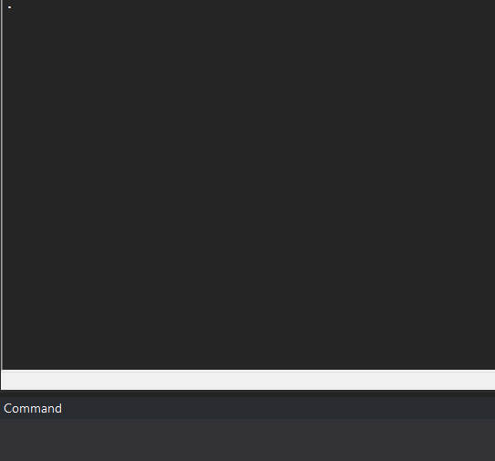

A completely useless command in Stata
Stata
While I was running a bit more than 5000 regressions in Stata, a friend of mine asked me what I usually do after running and exporting my regressions; well, I had the brilliant and useless idea of creating a command in Stata that mimics the face I make every time my code fails to run. By typing pikachu you will get the following:

This uses only the display command to make pikachu’s face. In order to install it: you can run the following command:
net install pikachu, from("https://raw.githubusercontent.com/rrmaximiliano/pikachu/main") replaceAnd that’s it. Now, you have pikachu reacting to your failures. Finally, in case you don’t know, the original meme is this one:

Reuse
Citation
BibTeX citation:
@online{rodriguez-ramirez2019,
author = {Rodriguez-Ramirez, Rony},
title = {A Completely Useless Command in {Stata}},
date = {2019-09-10},
url = {https://www.rrmaximiliano.com/blog/2019/2019-09-10-a-completely-useless-command-in-stata/},
langid = {en}
}
For attribution, please cite this work as:
Rodriguez-Ramirez, R. (2019, September 10). A completely useless
command in Stata. https://www.rrmaximiliano.com/blog/2019/2019-09-10-a-completely-useless-command-in-stata/